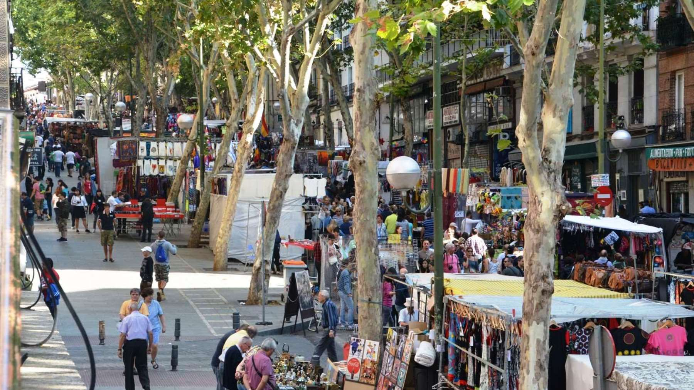

MERCADO DE SEGUNDA MANO

👨🏾💼 Organizador: Ayuntamiento Herencia
📅 Fecha: 20 Mayo 2025
📍 Ubicación: Plaza España, Herencia, Ciudad Real, España.
⏰ Hora: 10:30h - 14:30h
🌳 Medidas Ecológicas: Venta de materiales reciclados o segunda mano. Uso de bolsas de rafia.
🌍 Web Oficial: www.herencia.es